，打开截图。
，打开截图。
chrome支持 5.0 及以上或microsoft edge
平台访问地址:
默认地址：http://116.228.67.70:8080/
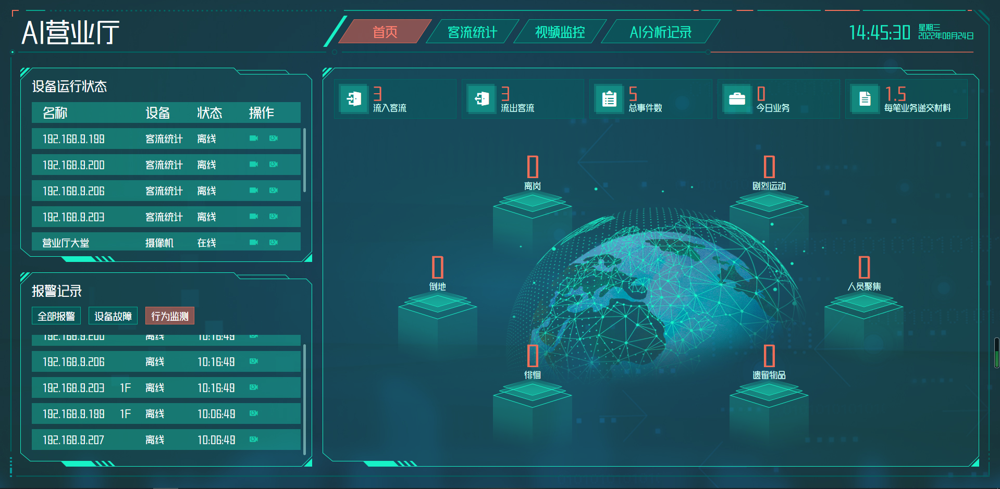
输入用户名和密码，登陆系统。
点击进入生活垃圾分类监管平台主页；
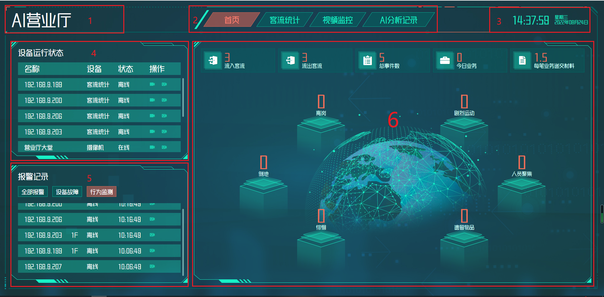
1. 平台名称
2. 主菜单
3. 时间板块
4. 设备运行状态
5. 报警记录
6. 数据统计区域
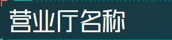
营业厅下的设备的名称，设备类型（客流统计，普通摄像机），状态（在线，离线），操作（视频预览，视频回放）。
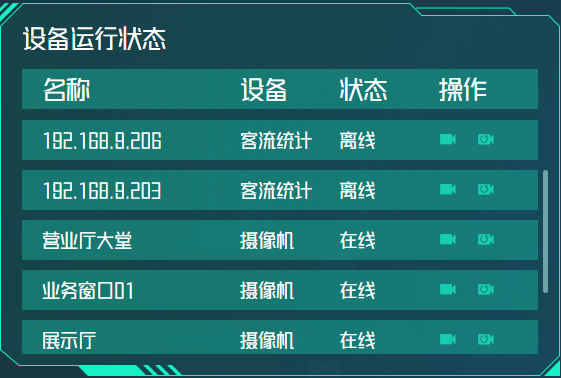
点击 ,弹出视频窗口预览视频。
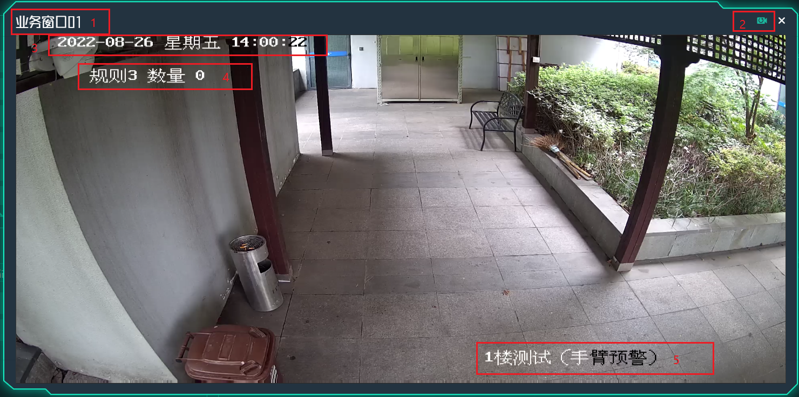
1.摄像机名称
2.摄像机回放键
3.视频日期，时间
4.规则，数量
5.摄像机OSD
视频预览可以查看当前的摄像机实时画面，并显示日期，时间，和名称。
点击,弹出视频窗口回看视频。
回放视频窗口，可以选择视频所在的日期和时间长度，并点击开始回放按钮。
视频开始回放后，将鼠标移到画面底部，显示出操作视频区域。
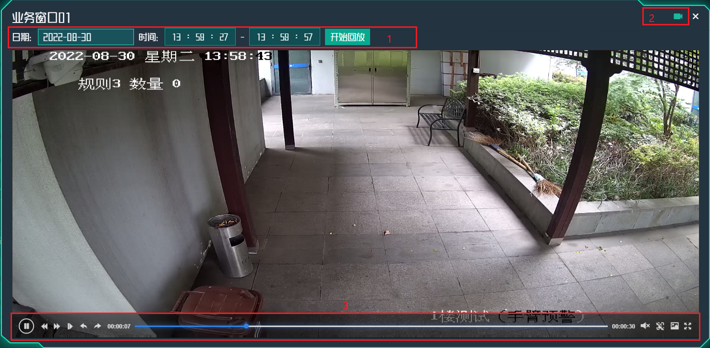
1.日期，时间选择区域
2.视频预览键
3.操作视频区域
点击日期，弹出日期选择框，选择需要查询的日期。
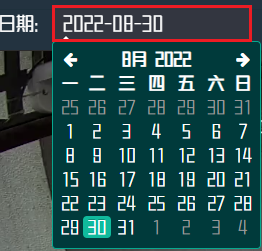
点击年月，弹出月份选择框，选择需要查询的月份。
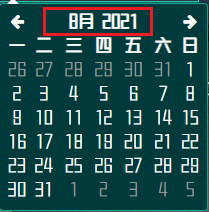
点击年，弹出年选择框，选择需要查询的年。
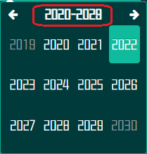
选择时间，点击时，分，秒以更改时间，左边是开始时间，右边是结束时间，确定时间段后点击开始回放视频。
视频回放的操作栏。
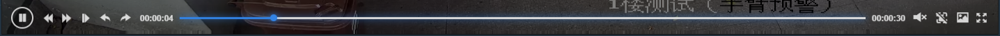
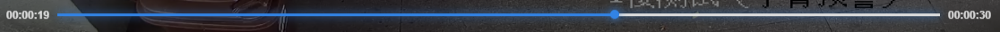 时间条,固定为30S
此图显示设备信息，行为，时间，报警回放视频和报警截图：
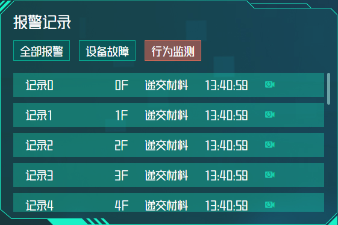
设备信息（对应摄像机名字，部署楼层）
行为（上线，离线，剧烈运动，滞留/徘徊，递交材料）
时间（发生报警的时间）
报警回放视频（点击回放报警视频，选择日期，开始时间，结束时间然后点击开始回放，默认视频时长为30S）
报警截图（触发报警事件后的视频截图）
统计出所有报警记录的列表，包括摄像机名称，摄像机部署的楼层，报警类型，触发报警时间，视频回放和截图。
统计出所有发生故障设备的列表，包括设备名称，设备部署的楼层，报警类型，发生故障的时间，视频回放和截图。
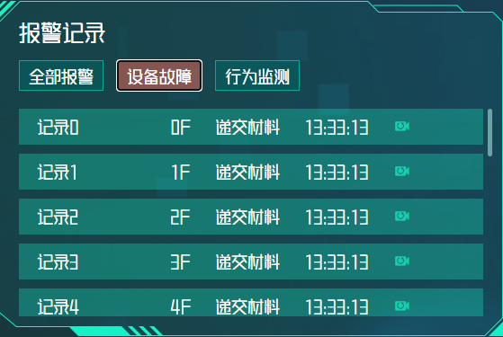
点击 ，打开截图。
蓝框内是报警区域，红框内是检测到的报警对象。
报警截图中也能体现触发报警的摄像机名称，日期，时间和规则。
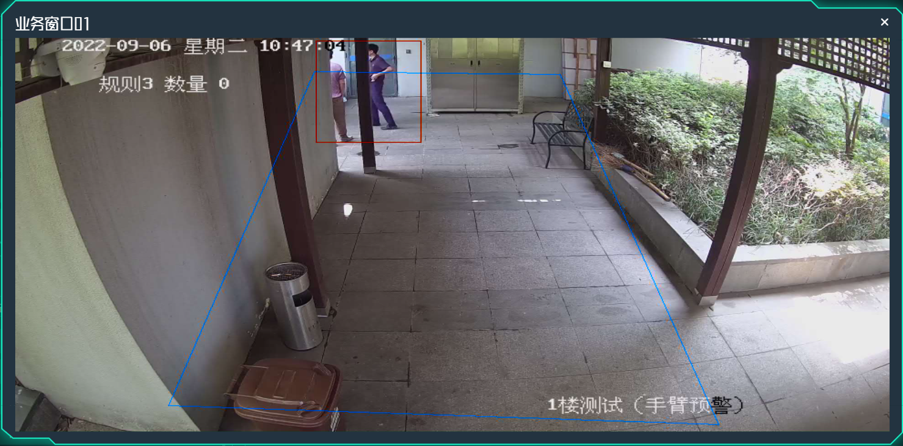
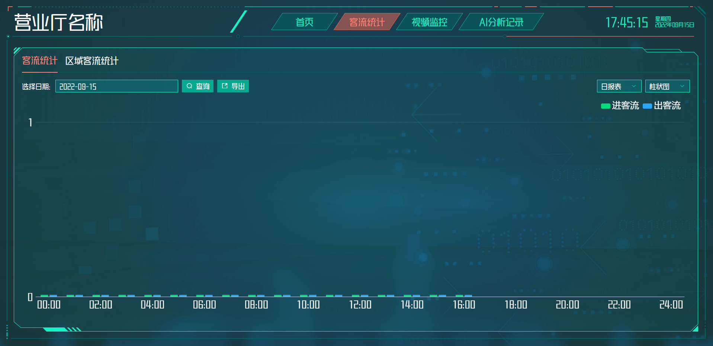
选择日期，日期默认为当天，具体操作参见：2.4.1
点击日报表，展开日报表/周报表/月报表菜单。
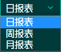
日报表：绿色柱状为进客流，蓝色柱状为出客流。
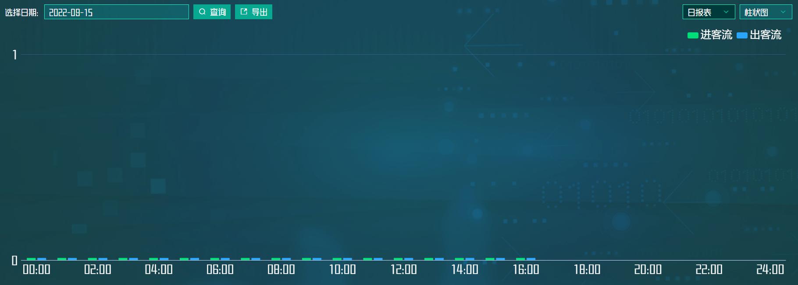
周报表：统计当周的客流
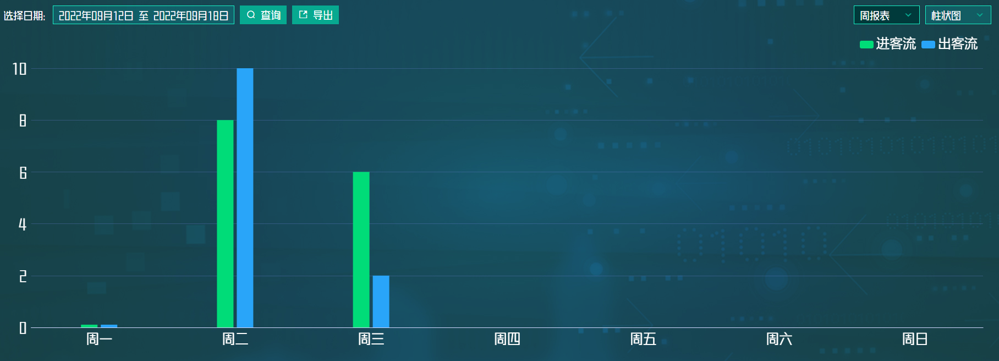
月报表：统计当月的客流，注意纵轴的日期间隔两天。
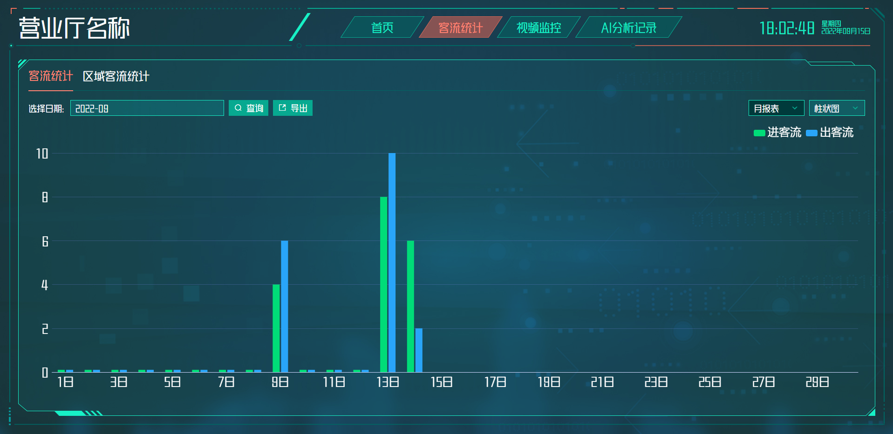
点击柱状图图标，弹出下拉菜单，可以切换折线图。
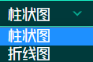
月折线图
折现对应横轴日期的部分会显示那一天统计的客流数量
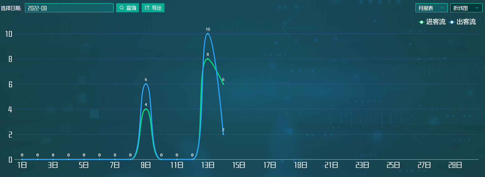
鼠标移至折现出，会出现详情弹窗--日期、进客流数量、出客流数量。
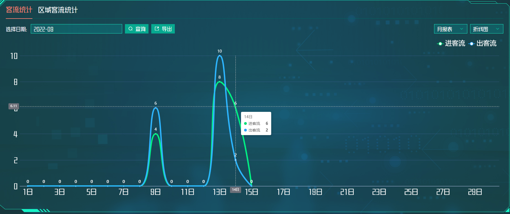
统计当天的区域客流数量，比如说出入口、大堂或某个划定的区域。
切换日期、折线图方法具体操作参见：2.6

查看摄像机列表，搜寻摄像机以观察摄像机的实时视频和视频回放，也可以实行分屏观看或者全屏观看。
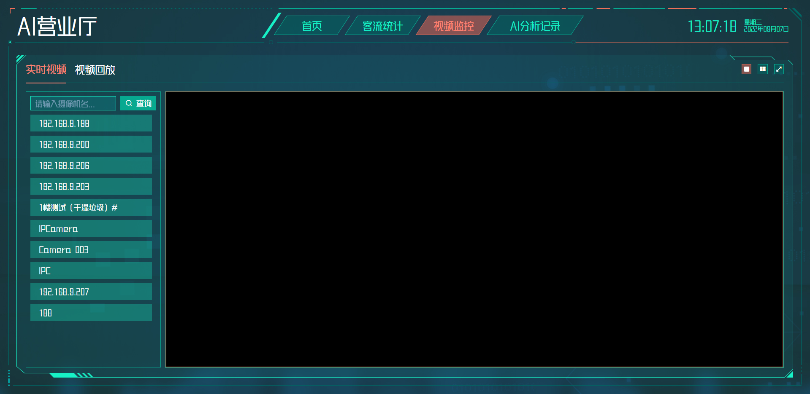
输入摄像机名称：IPCamera,点击查询。
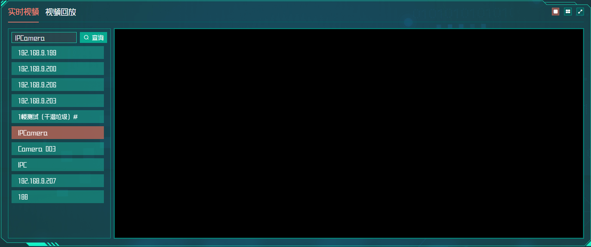
双击IPCamera，打开实时视频内容。
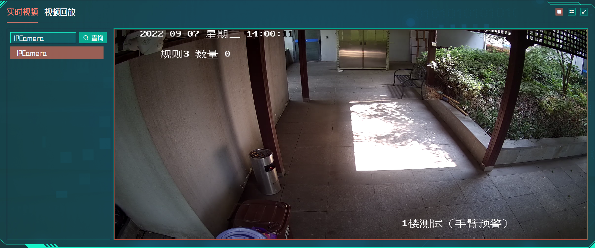
点击 ， 大屏幕切换成4个小屏幕。
可以同时查看4个摄像机的实时视频。
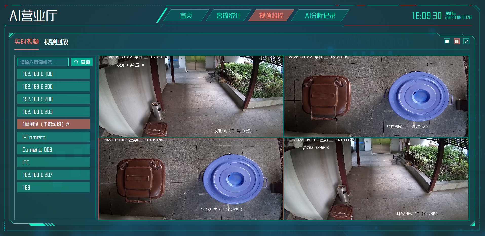
全屏效果
按ESC可以退出全屏模式

条件查询框
报警记录信息
报警记录当前数量和总数量
翻页/跳转功能区
记录分析发生的报警行为，信息包括摄像机名称、部署摄像机的楼层、警戒的区域、报警的类型、对报警对象的描述信息、触发报警的事件、操作报警视频和截图，查看报警事件的画面。
同时可切换查询条件查询对应设备的视频和截图，并导出相应的信息。
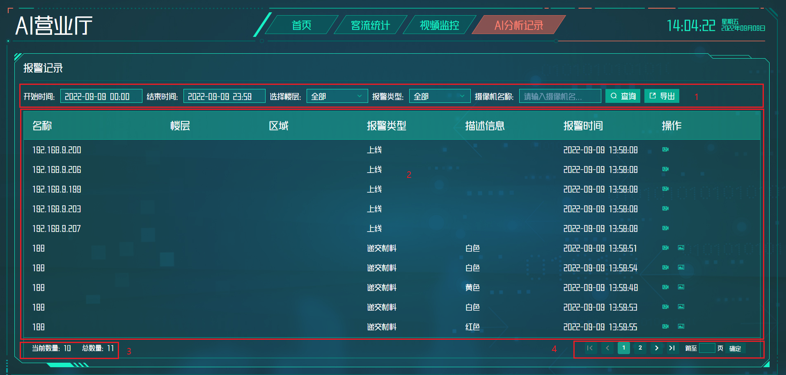
选择报警记录的开始时间和结束时间，部署摄像机的楼层，报警类型，摄像机的名称。
按条件查询报警记录，导出报警记录的Excel的文件。
日期，时间选择区域操作参见：2.5.1
点击选择楼层下拉箭头，展开菜单。

选择1F，点击查询，暂无相关报警信息。
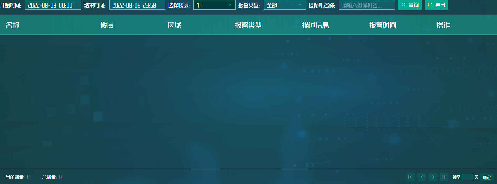
报警类型选择，点击下拉菜单，展开列表选择需要查询的类型。
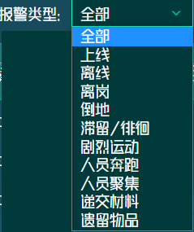
输入摄像机名称，点击查询，搜索摄像机。
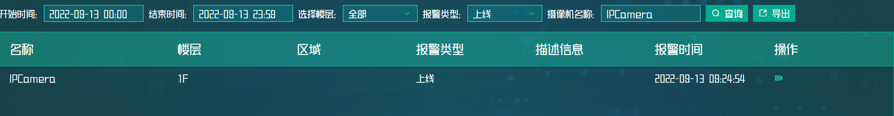
点击导出按钮 ，下载AI分析记录的文件至电脑上。
可以操作回放视频，详情参见摄像机回放:2.5
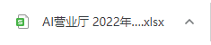

此区域将重要数据统计展示，方便工作人员阅览各项数据，没有更多操作功能。
想要查看详细信息请进入 AI分析记录 进行操作。
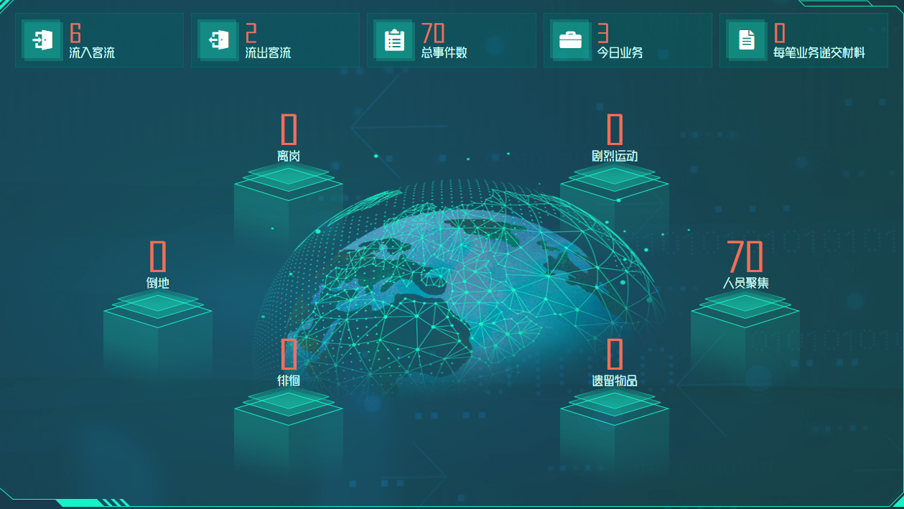
统计当天流入客流的数量
统计当天流出客流的数量
统计当天总事件数
统计今日业务总数
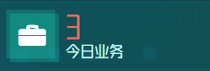
统计每笔业务递交材料的数量
统计当天离岗事件总数
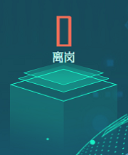
统计当天倒地事件总数

统计当天徘徊事件总数
统计当天剧烈运动事件总数
统计当天人员聚集事件总数
统计当天遗留物品事件总数
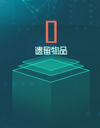